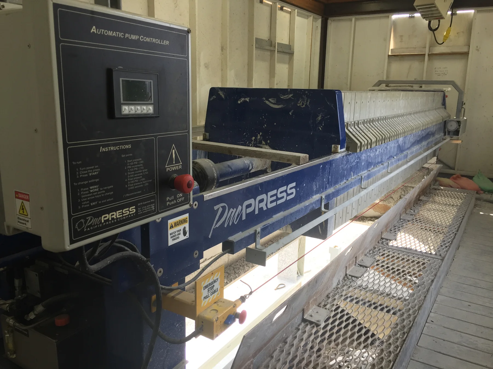
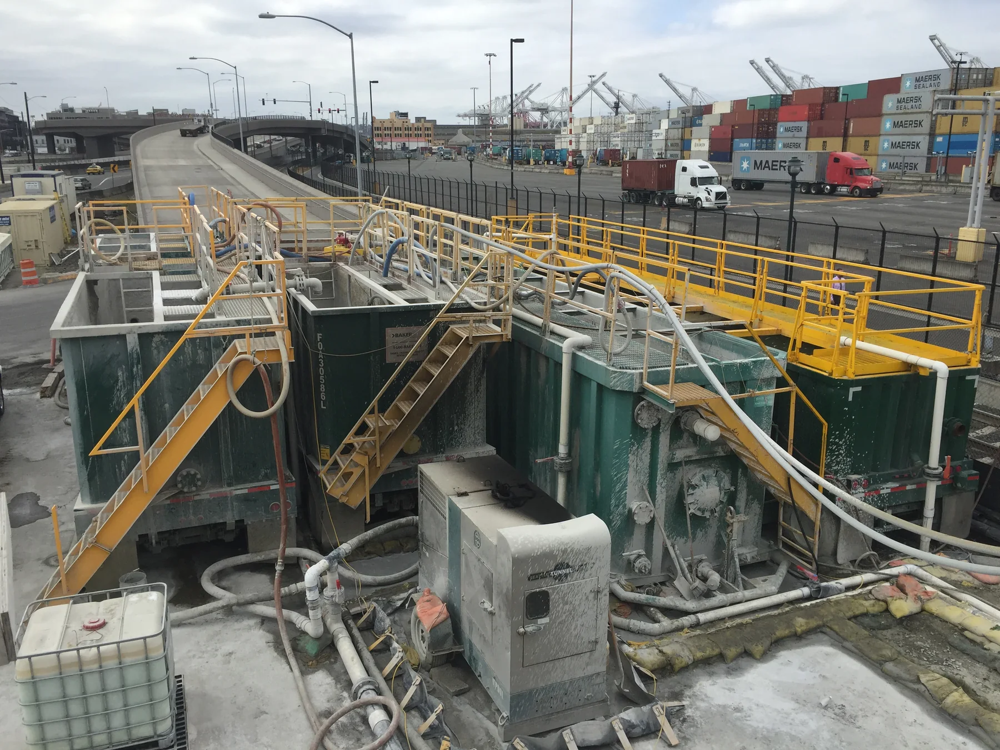

Bentonite Slurry Dewatering for Seattle's SR-99 Tunnel
A PacPress rental operated for 24 months as the final solids-dewatering step for washdown water and bentonite-laden slurry generated during tunnel boring.

The Tunnel-Boring Application
Seattle's SR-99 highway tunnel was excavated using the earth-pressure-balance tunnel boring machine commonly known as Big Bertha. The process generated bentonite-laden spoil slurry and washdown water that required temporary treatment throughout construction.
From Washdown Water to Concentrated Solids
The washdown water was treated with flocculant and routed to clarifiers. Settled solids from the clarifiers were then pumped to the rental filter press. This sequence concentrated the solids before the press completed the final mechanical dewatering step.

A Rental Built Into the Jobsite
The filter press operated for 24 months in a temporary building. It was positioned directly above a roll-off bin so discharged cake could fall into the container below, simplifying solids handling within a constrained construction site.
The Role of the Filter Press
The PacPress rental provided the last stage of the temporary water-treatment system. By converting clarifier underflow into dewatered cake, the press supported continued tunnel-boring operations while keeping liquid and solid waste streams separated for site handling.
Need temporary construction-water dewatering?
We can help plan press capacity, chemical conditioning, feed pumping, building clearance, and cake discharge around your site.